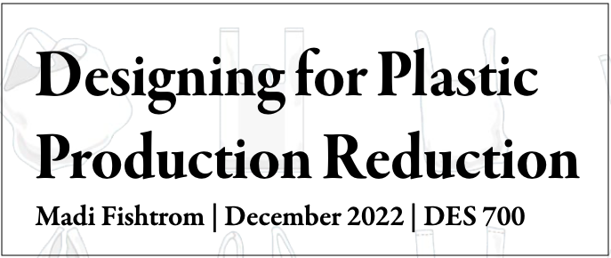

Research
Design as Protest
On researching design as protest, I looked into plastic bag usage. This is a highly controversial topic and the
impact of switching to paper has mixed results. The findings were that industries are not regulated on packaging
too often, which is something that we can fight to have changed. Click below to view a summary of my findings.

Creative Work Project
In completion of my Master's Degree, I am researching holistic care for cancer patients.
With this, I am designing a database for patients to use to find services in San Francisco, San Mateo, and Alameda Counties.
Click below to view my progress as of December 2023.